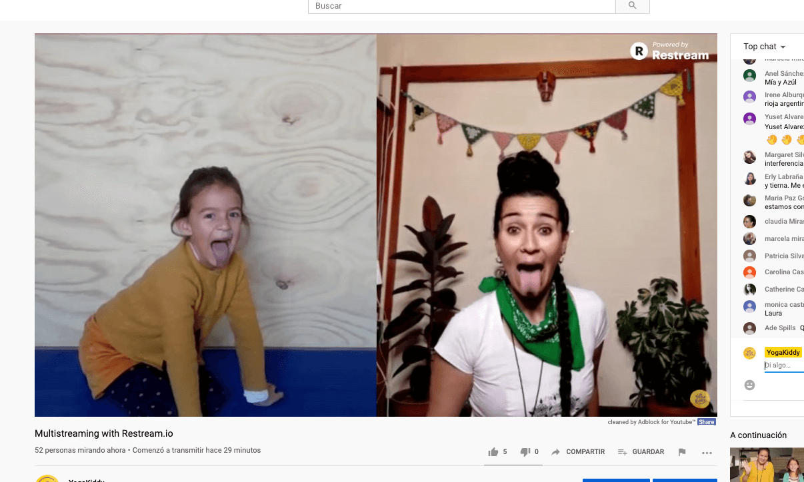

El domingo 21 de junio se celebró el Día Internacional de Yoga y para ello Peggy y Luz, realizaron una clase gratis de “Yoga para la Niñez”.
Revive aquí la clase completa y disfruta junto a tus niños y niñas de esta hermosa clase, que además contó con la participación inicial de Juliana, quien nos regaló un hermoso nuevo capítulo de “Dino Yogi”.
¡Gracias a tod@s quienes nos acompañaron en este mágico momento!
Carmen 🌻